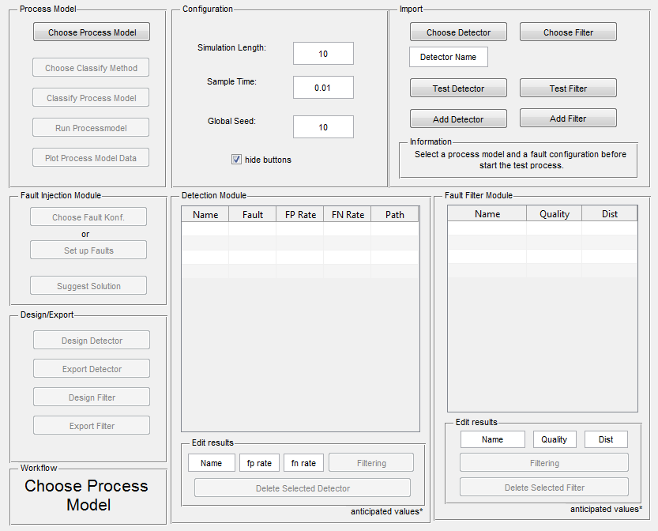

Documentation Graphical User Interface
Contents
- How to use this Graphical User Interface 'FIDF_Framework'
- Ipmort New Filters and Detectors
- Image of the graphical user interface
- Related Functions
- Related Graphical User Interfaces
- Panel: Process Model
- Panel: Configuration
- Panel: Import
- Panel: Fault Injection Modul
- Panel: Detection Modul
- Panel: Fault Filter Modul
- Panel: Design/Export
How to use this Graphical User Interface 'FIDF_Framework'
This GUI supports the user by choosing an appropriate filter and detector for a given process model. In order to guide the user during this process, images at the lower, left corner will displaying advices.
Nevertheless, the first step is to choose a process model, which should be a Simulink model. We assume that the selected model has exactly one output which returns the sensor observations. The specified process model will be classified in order to estimate the occuring dynamics. Experienced users can choose the algorithm used to classify the process model, too.
The second step is to specify the expected fault types and their parameters. This can be done by either choosing a save fault configuration or setting up a new configuration. Pushing the button 'Suggest Solution' will start the classification method and determine appropriate detectors and filters considering the process model as well as the specified fault configuration. This is done by searching for saved filters and detectors in a special database. The result will be displayed as a list of filters and detectors in their modules.
Concerning detectors, this table contains the names of the methods on which the detector is based on as well as false-positives rates and false-negatives rates. If you have choosen multiple faults, every detector will be listed multiple times, each time describing the performance concerning a different fault type. The listed values are only a first gues on how a specific detector could performe on your provided process model. Using the inputs fields and the button 'Filtering' one can filter the displayed detectors. The entered values for false-positive and false-negative rates will be used to compare the values displayed in the table with. If the value of a detectors is worse then the specified one, the detector will be filtered out. By marking one cell of an detector and using the button 'Delete Selected Detector', one can delete the detector from the lookup talbe. By marking one cell of an detector and using the button 'Design Detector' the framework will start to design the detector for the given process model. This is done by a optimization algorithm and can take some time. At the end a window will show up, displaying the performance of the resulting detector. If the results are appropriate, one can export the designed detector as a Simulink-Model by clicking the button 'Export'.
Concerning filters, the provided filter table contains the name of the filter with a quality value and a distance value. How this values are calculated is described here. The listed values are only a first gues on how a specific filter could performe on your provided process model. By marking one cell of an filter and using the button 'Design Filter' the framework will start to design the filter for the given process model. This is done by a optimization algorithm and can take some time. At the end a window will show up, displaying the performance of the resulting filter. If the results are appropriate, one can export the designed filter as a Simulink-Model by clicking the button 'Export'.
Ipmort New Filters and Detectors
New filters and detectors can be imported by using the module placed at the upper right corner. A detector is imported by choosing the folder containing all necessary functions (see also design_detector, section 'Specifying a detector type'). Futhermore, one has to specify a the name of imported detector. Using the 'Test Detector' button will start a time consuming process. During this process, the detector will be tested for all combinations of fault types and three different process models representing a process model with low, middle and high dynamics. At the end, the performance of the detector concerning all combinations and dynamics are displayed. If the results are satisfying, one can add the detector to the database by using the button 'Add Detector'. From now on, this detector will be displayed as an possible solution inside the detection module. Likewise, filters are added to the database.
Image of the graphical user interface

Related Functions
Related Graphical User Interfaces
Panel: Process Model
% Element: *Choose Process Model* % Function: Get the file name and path of the processmodel with uigetfile() % and call set_processModel() with the given informations to set the % choosen process model and calls set_sampletime() to set up the given % sampletime into this process model % Element: *Choose Clasify Method* % Function: Get the method name with uigetfile() and save the name to % workspace % Element: *Classify Process Model* % Function: Calls classify_processmodel() with the default calssify method or from the choosen methon % from 'Choose Clasify Method' and write the result to the workspace as _prozess_dynamic_ % Element: *Run Process Model* % Function: Calls getModelData() and write the generated data to the % workspace as _gendata_ % Element: *Plot Process Model Data* % Function: Calls plot() wich _gendata_
Panel: Configuration
% Element: *Simulation Length* % Function: Get the consigned data from the field and write it as % _SimLength_ to the workspace % Element: *Sample Time* % Function: Get the consigned data from the field and write it as % _SampleTime_ to the workspace % Element: *Global Seed* % Function: Get the consigned data from the field and write it as % _GlobalSeed_ to the workspace % Element: *hide buttons* % Function: if checked only the buttons which are need for the current % state of the workflow are shown and clickable. if unchecked all buttons % are shown and clickable.
Panel: Import
% Element: *Choose Detector* % Function: Get the path of the detector with uigetfile() % and write it as _FilePath_Detector_ to the workspace % Element: *Choose Filter* % Function: Get the name and the path of the filter with uigetfile() % and write them as _FileName_Filter_ and _FilePath_Filter_ to the workspace % Element: *Detector Name* % Function: Get the consigned data from the field and write it as % _FileName_Detector_ to the workspace % Element: *Test Detector* % Function: Calls testDetector() with the choosen detector from *Choose Detector* % and shows his results via the gui result_testDetector() % Element: *Test Filter* % Function: Calls test_filter_to_add() with the choosen filter from *Choose Filter* % and shows his results via the gui result_testFilter() % Element: *Add Detector* % Function: Calls add_detector() with the given data from the previous % elements % Element: *Add Filter* % Function: Calls add_filter() with the given data from the previous % elements
Panel: Fault Injection Modul
% Element: *Choose Fault Injection Configuration* % Function: Get the name and the path of the fault configuration file with % uigetfile() and calls loadFaultKonf() and countFaults() % Element: *Set up Faults* % Function: Calls the GUI-Faultlist, where u can create a new fault % injection configuration file % Element: *Suggest Solution* % Function: Calls suggest_solution() which fills the detector/filter table % with the data of filter/detector from the LookUp-Table. These data are % fitted to the actual process model dynamic and fault activation.
Panel: Detection Modul
% Element: *Detection Table* % Function: Filled with the data of detector from the LookUp-Table. These data are % fitted to the actual process model dynamic and fault activation. Elements % can be selected to choose a detector for the design detector process. % Element: *Filtering* % Function: Update the table with the given parameters next % to the button.(filterSuggestedDetectors()) % Element: *Delete Selected Detector* % Function: Calls delete_detector() with the selected detector from the % table.
Panel: Fault Filter Modul
% Element: *Filter Table* % Function: Filled with the data of filter from the LookUp-Table. These data are % fitted to the actual process model dynamic and fault activation. Elements % can be selected to choose a filter for the design filter process. % Element: *Filtering* % Function: Update the table with the given parameters next % to the button.(filterSuggestedFilter()) % Element: *Delete Selected Filter* % Function: Calls delete_filter() with the selected detector from the % table.
Panel: Design/Export
% Element: *Design Detector* % Function: starts the design process for the choosen detector.(start_designing_detector()) % Element: *Export Detector* % Function: Uses uiputfile() to define the file destination of the recently % generated detector. % Element: *Design Filter* % Function: starts the design process for the choosen filter.(get_config()) % Element: *Export Filter* % Function: Uses uiputfile() to define the file destination of the recently % generated filter.